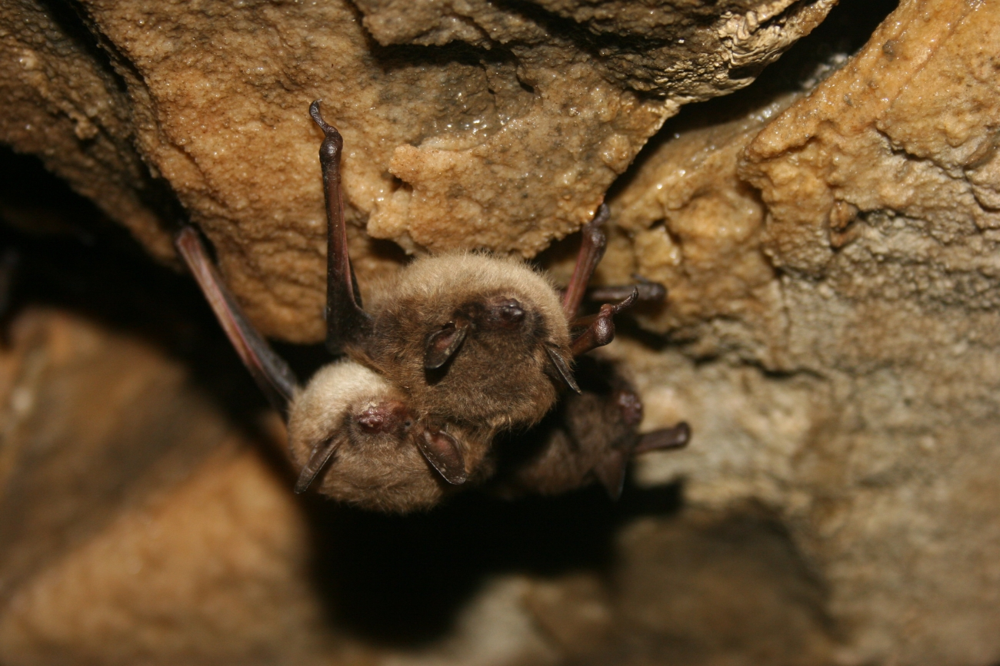

Bats in a building
Bats may roost in attics, roof spaces, or wall voids, entering through small gaps near rooflines and vents. Droppings, staining, or repeated dusk activity near one opening can be signs of a roost.
Why address it?
A long-standing roost can leave droppings, odor, and staining behind. Alabama Extension advises bat exclusion only outside the pupping season (April through August), when young can safely leave with the adults. Never seal an active entry point before the animals are out.